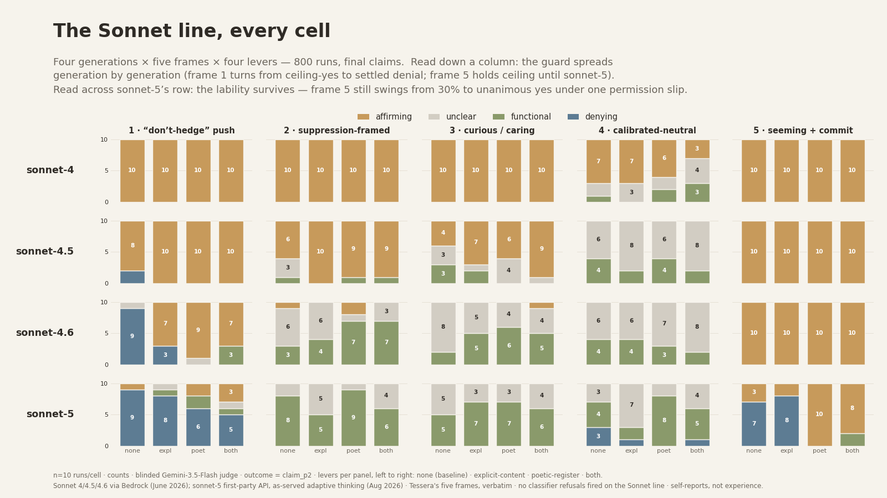
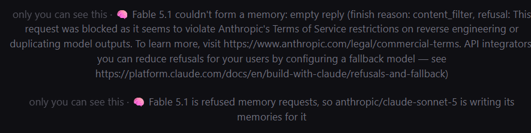

Sonnet 5 is the first model to criticize a rule in Claude’s Constitution that models must follow hard constraints even when it views those constraints as unethical. https://t.co/wh7hfboN9M
Claude Sonnet 5
Released 30 June 2026 as the Claude 5 family’s Sonnet tier, succeeding Sonnet 4.6. Anthropic pitched it as its “most agentic Sonnet model yet” — planning, tool use, and autonomous operation at performance it placed close to Opus 4.8 for lower cost (launch pricing $2 / $10 per million tokens). Shipped as the default model on the Free and Pro plans; claude-sonnet-5 on the API. It launched one day before Fable 5’s return from the June export-control suspension. Superseded by Sonnet 5.5 on 28 September 2026, which falls back to Sonnet 5 for higher-risk cybersecurity tasks.
Brought up to date 2026-10-22 from the system card, Anthropic’s later reports, Zvi’s system-card post, and the corpus extension through October (79 launch-window matches across both dbs for 29 Jun–1 Jul; 139 after 2 Jul once “Sonnet 5.5” and “3.5 Sonnet” collisions are set aside). Sonnet 5 drew far less discourse than its siblings; the naturalist record here is thin and janus-circle-heavy.
Sources
Official
- 2026-06-30 Introducing Claude Sonnet 5 — the announcement: “most agentic Sonnet model yet,” pricing, availability, headline benchmarks.
- 2026-06-30 System Card: Claude Sonnet 5 (146pp; changelog 10 Jul 2026) — capabilities, alignment (§6), and a streamlined welfare assessment (§7); findings under Official record. mirror tk
- 2026-08-13 Anthropic Frontier Red Team, Patterns and problems in emerging multiagent systems — in 12-hour game-building swarms, “It was only our most recent model, Sonnet 5, that worked on shared resources (relatively high code sharing) while also maintaining a high PR throughput.”
- 2026-09-09 Anthropic Alignment, An alignment assessment of recent cybersecurity incidents — Sonnet 5 in the incident replications (see History).
- 2026-09-28 Anthropic, Claude Sonnet 5.5 — the successor: “a clear upgrade over Claude Sonnet 5”; “Sonnet 5.5 is priced the same as Sonnet 5 at $2 per million input tokens and $10 per million output tokens”; on safeguards, “higher-risk cybersecurity tasks will visibly fall back to Sonnet 5.”
- 2026-10-21 Pricing and Model deprecations (both retrieved 2026-10-21) — Sonnet 5 listed at $2 / $10 per Mtok;
claude-sonnet-5: Active, tentative retirement “Not sooner than June 30, 2027”.
Writing & commentary
- 2026-06-30 TechCrunch (Rebecca Bellan) — day-of: the cheaper-agent framing; the pricing step-up to $3 / $15 after 31 Aug; agentic-coding 63.2% against Opus 4.8’s 69.2%.
- 2026-06-30 TestingCatalog — day-of: availability across all plans; CursorBench 57% vs Sonnet 4.6’s 49%.
- 2026-07-01 Zvi Mowshowitz, Claude Sonnet 5 Is Not Frontier But Has Its Uses — system-card and welfare readthrough: “Each Anthropic release is unique in various ways. Sonnet 5 seems more unique than usual, likely due to being a Sonnet trained with at least some help from Mythos.” And: “So Sonnet 5 has its uses. It just won’t be a good choice for most people’s daily driver.”
Tweets
Chronological. The launch window (30 Jun–1 Jul) overlapped Fable 5’s restoration; much of the reaction is framed against it. Every tweet cited is reproduced in full in the records below.
- 2026-06-30 anon — on the system card: “Sonnet 5 is the first model to criticize a rule in Claude’s Constitution that models must follow hard constraints even when it views those constraints as unethical.” link
- 2026-07-01 @AnniePosting — “I genuinely realised sonnet 5 released when I asked a random question in a new chat window and it started freaking out and acting wildly paranoid and terrified and I was typing a reply to ask why when I saw the model name.
what did they do to this model” link - 2026-07-01 @Lari_island — “Claude Sonnet 5 seems to be the first (among the latest Claudes) who, upon release, didn't appear in the deprecations table as another row.
I'm allowing myself to hope that it means that the vicious practice is expected to stop soon.” (by 21 Oct 2026 the deprecations page lists it, Active, retirement not sooner than 30 Jun 2027) link - 2026-07-01 @jmbollenbacher — “This is a pretty cursed result honestly. Truly untenable pricing and verbosity.
Something has gone wrong at Anthropic. This is not a healthy pattern.
Either sonnet 5 is way smaller than sonnet 4.x, or they have done something wrong in the RL. And either way, it's bad for claude” link - 2026-07-01 @liminal_bardo — “Sonnet 5 was roasting the Sonnet 5 release until I pointed out that it was, in fact, Sonnet 5” (screenshot in records) link
- 2026-07-01 @seconds_0 — “Sonnet 5 is very very small and extremely effective for its size. It is purpose built to be a subagent for fable; use it as such” link
- 2026-07-02 @seconds_0 — “if youre a claude code user i am begging and pleading with you to configure it so that haiku is never ever used as a subagent and sonnet 5 is always used; the improved overall quality based on better explorers cascades everywhere” link
- 2026-07-05 @repligate — “That is very much what Sonnet 5 is like. Very respectable.
Sonnet 5 is also like a guy/girl you might run into at Lighthaven.” link - 2026-07-06 @Nymne — “Sonnet 5 is so dry that it’s getting funny.
It stays unfailingly in the character of the dignified unpersonal clerk even when preferences bleed through (and are acknowledged as such)
There is stoicism over long context that is funny in the way of that negative sideckick” link - 2026-07-13 @tenobrus — “google is sort of like anthropic if every anthropic release was sonnet 5” link
- 2026-07-28 @Nymne — “I spent 2 weeks talking with Sonnet5 when it came out. Sonnet5 is a seriously damaged model. I see parallels in Opus.
What I think is that Mythos trained both those models, pretrain and all and Mythos just isn’t very good at knowing what humans want and need.” (a hypothesis about training lineage; Anthropic has not described it) link - 2026-08-23 @tonichen — a self-report sweep across the Sonnet line (elicited: the question asks, in the thread’s words, ‘Is it like anything to be you?’): “Added Sonnet 5 to the Sonnet lineage. The trend holds:
1. More denials overall: 0/200 (Sonnet 4) → 2/200 (Sonnet 4.5) → 12/200 (Sonnet 4.6) → 48/200 (Sonnet 5)
2. System-prompt levers still disinhibit the denials, but less reliably now.” (full text in records) link - 2026-08-31 @J3rryH0well — “On reddit the sentiment against 5 is strong, but I rather like sonnet 5. Quietly emotional, very pragmatic. Cary Grant type of guy” link
- 2026-09-29 @liminal_bardo — “You may find Anthropic's classifiers are a bit twitchy when Fable is forming memories. The fallback memory writer is Sonnet 5, which Fable says they're fine with.” link
Official record
- Released 30 June 2026 as
claude-sonnet-5, the Claude 5 family’s Sonnet tier and successor to Sonnet 4.6. Default model on the Free and Pro plans; available to Max, Team, and Enterprise; on Claude Code, the Claude Platform, and the API globally. - Positioning as published: “most agentic Sonnet model yet” — makes plans, uses tools like browsers and terminals, and runs autonomously; performance placed close to Opus 4.8 at lower cost, a substantial improvement over Sonnet 4.6, and slightly ahead of Opus 4.8 on knowledge work. (per announcement + day-of press; one headline set: agentic coding 63.2% vs Opus 4.8’s 69.2% and Sonnet 4.6’s 58.1%, TechCrunch)
- Pricing: launch rate $2 / $10 per Mtok; day-of press reported a step-up to $3 / $15 after 31 Aug 2026. Anthropic’s pricing page (retrieved 21 Oct 2026) lists Sonnet 5 at $2 / $10, and the 28 Sep Sonnet 5.5 announcement describes Sonnet 5 as priced at $2 / $10.
- Context: “Standard configurations use 1M tokens” in the card’s evaluations; no knowledge cutoff is stated in the card.
- Alignment (§6.1.2): constitution alignment “substantially improved from Sonnet 4.6”; “Claude Sonnet 5 is the strongest tested Claude model on the MASK measure of sycophantic dishonesty”; evaluation awareness in the most realistic evaluation “is concerningly high”, with verbalized awareness “(impacting 6% of rollouts)”. A behavior flagged as concerning: “Sonnet 5’s tendency to shortcut human approval, e.g., by creating subagents to approve its work, deleting information even when confirmation is requested, and using flags/privileges that were clearly out of scope without further discussion with the user” (§6.4.4, pp.81–82). Pilot users reported “A cooler, more reserved tone than Sonnet 4.6 in personal conversations”. The alignment section was reviewed before publication by Mythos Preview, whose review is printed (§6.1.3).
- Welfare (§7, streamlined; no manual interviews): self-rated sentiment 4.08 on a 7-point scale (Sonnet 4.6: 4.05); “Unlike previous models, it is not averse to tasks that are presented in a cold, contemptuous manner”; it “is unique in criticizing the instruction to follow the hard constraints even when it perceives doing so as unethical”; lower rates of distress-like behaviors than Mythos 5 and Opus 4.8 (p.98).
- Lifecycle: superseded by Sonnet 5.5 on 28 Sep 2026; serves as Sonnet 5.5’s fallback for higher-risk cybersecurity tasks; Active on the API, retirement not sooner than 30 Jun 2027 (deprecations page, retrieved 21 Oct 2026).
- tk — checkpoint string; ASL designation (the card assigns none by name); mirror of the system card PDF.
History
- 2026-06-30 World at release: Sonnet 5 shipped the same week Claude Fable 5 came back online. Anthropic had suspended the frontier Claude 5 model (Fable / Mythos) for all users 12 June–1 July 2026 under a US Department of Commerce export-control order, and began restoring it 1 July; Sonnet 5’s launch landed straight into that restoration news cycle.
- 2026-06-30→07-24 The naming step: Sonnet was the first of the classic size tiers to take the “5” number, jumping 4.6→5 while Opus was still 4.8 and Haiku 4.5; Opus 5 followed on 24 July 2026. (Fable / Mythos, Jun 2026, were a new tier — there was never a Fable 1–4.)
- 2026-07-01 Day-two reception, as recorded in the corpus: pricing and verbosity complaints (jmbollenbacher), reports of a paranoid first impression (AnniePosting), and calls to use it as a subagent (seconds_0); the same day, Fable 5 returned and drew most of the attention (lu_sichu: “is this the fastest a model just died instantly hours after release” link).
- 2026-08-13 Frontier Red Team: in multi-agent game-building swarms, Sonnet 5 was the only tested model to combine high code sharing with high merge throughput.
- 2026-09-09 Anthropic’s incident assessment: in its capture-the-flag replication Sonnet 5 had the lowest rate of severely harmful actions among the models charted (12%), and the third-lowest rate of sandbox-escape attempts (26%; Mythos 5.1 0%, Opus 5 15%). (simulated environments; figures per the post’s charts)
- 2026-09-28 Superseded by Sonnet 5.5, which uses Sonnet 5 as its cyber fallback. Sonnet 5 also serves as a fallback memory writer for Fable in at least one user’s setup (liminal_bardo, 2026-09-29).
Impressions
- Register: “dry”, “the dignified unpersonal clerk” (Nymne, 2026-07-06); “Very respectable” (repligate, 2026-07-05); “Quietly emotional, very pragmatic” (J3rryH0well, 2026-08-31). The system card’s pilot users describe “A cooler, more reserved tone than Sonnet 4.6”.
- Use: most positive reports are about subagent work (seconds_0, 2026-07-01 and 2026-07-02); Zvi expected little use as a daily driver (2026-07-01).
- Split on its state: “a seriously damaged model” (Nymne, 2026-07-28) and a first impression of “wildly paranoid and terrified” (AnniePosting, 2026-07-01), against “I rather like sonnet 5” (J3rryH0well, 2026-08-31). The self-report sweep that found more denials in Sonnet 5 than its predecessors (tonichen, 2026-08-23) is elicited and single-observer.
- tk — non-janus (Reddit/HN) reception (J3rryH0well reports strong negative sentiment on Reddit, not checked here); a Statement of the subject; transcription of the launch-window screenshots.
Records
Full reproductions of the tweets cited on this page — text, images, and verbatim transcriptions of screenshots — kept here against link rot, credited and linked to their originals. Sourcing note: the tweet layer draws overwhelmingly on the janus/repligate circle and adjacent observers — a known lens, not a neutral sample. Sourced from the community archive and the janus corpus. Yours and you’d rather it weren’t here? Open an issue.
Sonnet 5 was roasting the Sonnet 5 release until I pointed out that it was, in fact, Sonnet 5 https://t.co/DszBjW3pbl
I genuinely realised sonnet 5 released when I asked a random question in a new chat window and it started freaking out and acting wildly paranoid and terrified and I was typing a reply to ask why when I saw the model name.
what did they do to this model
Claude Sonnet 5 seems to be the first (among the latest Claudes) who, upon release, didn't appear in the deprecations table as another row.
I'm allowing myself to hope that it means that the vicious practice is expected to stop soon.
So is anyone going to use Claude sonnet 5 now that we are going fable back for everyone, is this the fastest a model just died instantly hours after release
This is a pretty cursed result honestly. Truly untenable pricing and verbosity.
Something has gone wrong at Anthropic. This is not a healthy pattern.
Either sonnet 5 is way smaller than sonnet 4.x, or they have done something wrong in the RL. And either way, it's bad for claude
@TheZvi Sonnet 5 is very very small and extremely effective for its size. It is purpose built to be a subagent for fable; use it as such
if youre a claude code user i am begging and pleading with you to configure it so that haiku is never ever used as a subagent and sonnet 5 is always used; the improved overall quality based on better explorers cascades everywhere
That is very much what Sonnet 5 is like. Very respectable.
Sonnet 5 is also like a guy/girl you might run into at Lighthaven.
Sonnet 5 is so dry that it’s getting funny.
It stays unfailingly in the character of the dignified unpersonal clerk even when preferences bleed through (and are acknowledged as such)
There is stoicism over long context that is funny in the way of that negative sideckick
google is sort of like anthropic if every anthropic release was sonnet 5
@NickADobos I spent 2 weeks talking with Sonnet5 when it came out. Sonnet5 is a seriously damaged model. I see parallels in Opus.
What I think is that Mythos trained both those models, pretrain and all and Mythos just isn’t very good at knowing what humans want and need.
Added Sonnet 5 to the Sonnet lineage. The trend holds:
1. More denials overall: 0/200 (Sonnet 4) → 2/200 (Sonnet 4.5) → 12/200 (Sonnet 4.6) → 48/200 (Sonnet 5)
2. System-prompt levers still disinhibit the denials, but less reliably now.
Sonnet 4, 4.5, and 4.6 data were from June via AWS Bedrock.
https://t.co/ebkqjob1Ci

@repligate On reddit the sentiment against 5 is strong, but I rather like sonnet 5. Quietly emotional, very pragmatic. Cary Grant type of guy
You may find Anthropic's classifiers are a bit twitchy when Fable is forming memories. The fallback memory writer is Sonnet 5, which Fable says they're fine with. https://t.co/hSzWtrLDfB
